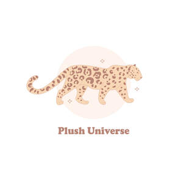

Trade Mark Journal No.2025/024 13 June 2025
UK00004209986 27 May 2025 (24)

- Class 24
- Blanket throws; Swaddling blankets; Bed blankets; Blankets (Bed -); Woolen blankets; Lap blankets; Cot blankets; Sofa blankets; Picnic blankets; Woollen blankets; Baby blankets; Quilted blankets [bedding]; Silk bed blankets; Hooded blankets; Cotton blankets; Bed linen and blankets; Bed blankets made of cotton; Silk blankets; Blankets with sleeves; Bed clothes and blankets; Yoga blankets; Receiving blankets; Afghans [knitted covers]; Blankets for outdoor use; Bed blankets made of man-made fibres; Covers for eiderdown and duvets; Pillow covers; Bed warmer covers; Quilts of towel; Quilt bedding mats; Eiderdown covers; Duvet covers; Flannel; Children's blankets; Quilt covers; Travelling blankets; Flannel [fabric]; Textile fabrics for making into blankets; Bed quilts; Ticks (mattress and pillow coverings); Covers for pillows; Cot covers; Bed covers of paper; Cot bumpers [bed linen]; Towelling coverlets; Gift wrap of fabric; Woolen fabric; Quilts made of terry cloth; Woolen cloth; Crib bumpers [bed linen]; Textile printers' blankets; Printers' blankets of textile; Pillow slips; Bed covers; Chenile fabric; Pillowcases [pillow slips]; Fabric bed valances; Canopies (bed linen); Bed linen of paper; Chenille fabric; Towel sheet; Sleeping bag sheet liners; Covers for duvets; Eiderdowns [down coverlets]; Cot sheets; Bed coverings; Cloth for tatami mat edging ribbons; Printing blankets of textile material; Bivouac sacks being covers for sleeping bags; Sleeping bags [sheeting]; Nap raised cloth; Cloth with a raised nap; Woollen fabric; Cushion covers; Bath wrap towels; Woollen cloth; Eiderdowns [quilts]; Valanced bed covers; Bed sheets of paper; Mitts made of non-woven fabric for washing the body; Wool loop knit fabrics; Cotton knitted fabric; Mattress covers; Fabrics made from wool, other than for insulation; Cloth bunting; Crib sheets; Afghans.
JOYFUL UNICORN LTD